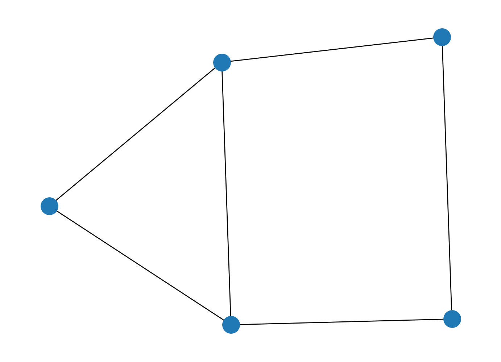
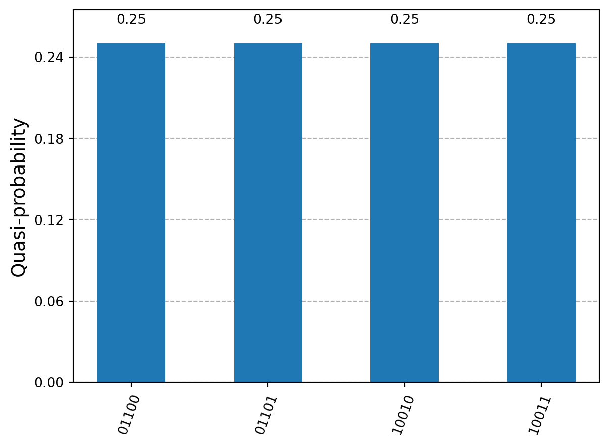
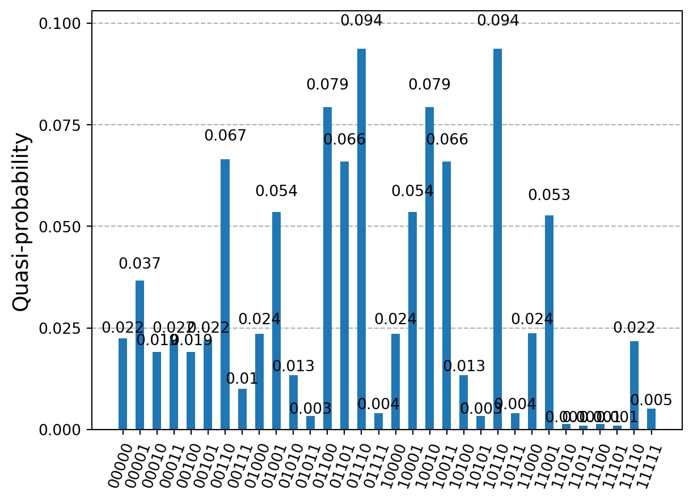
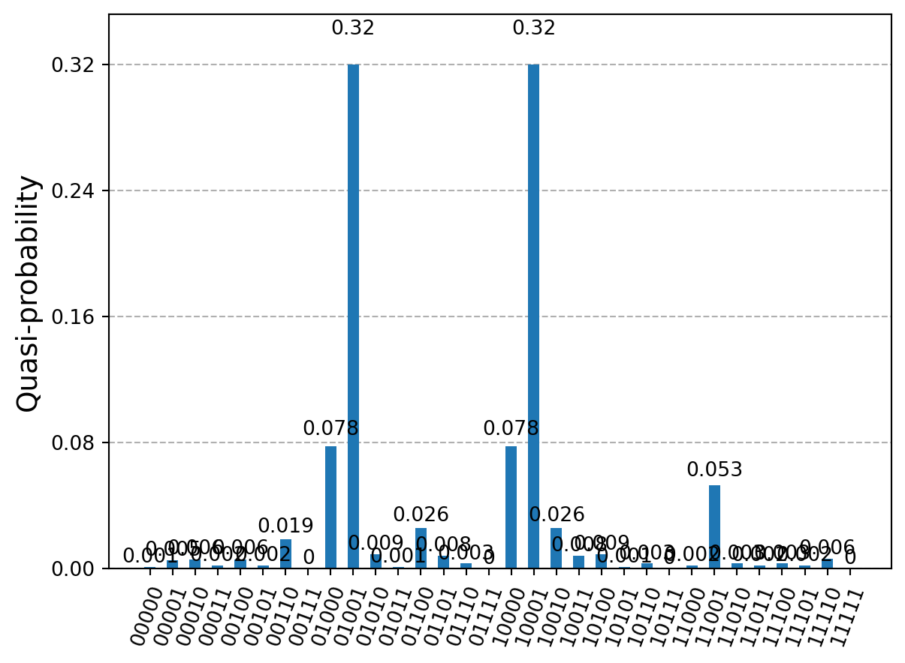
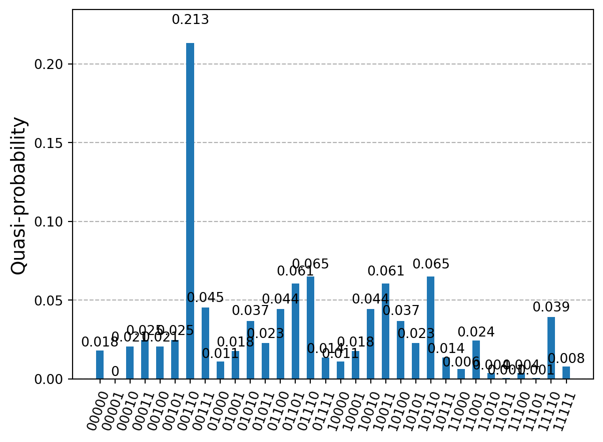
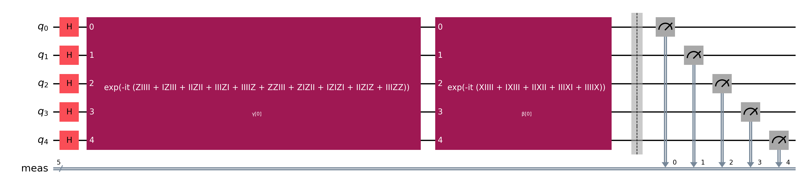
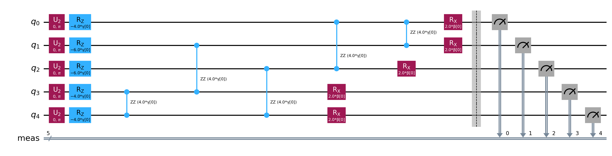
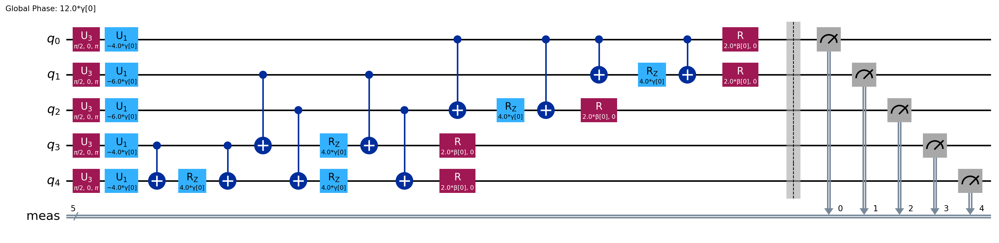
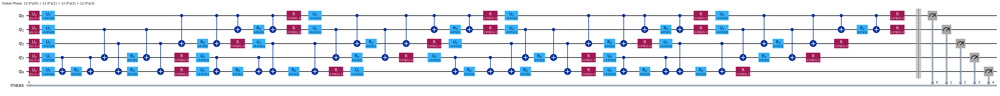
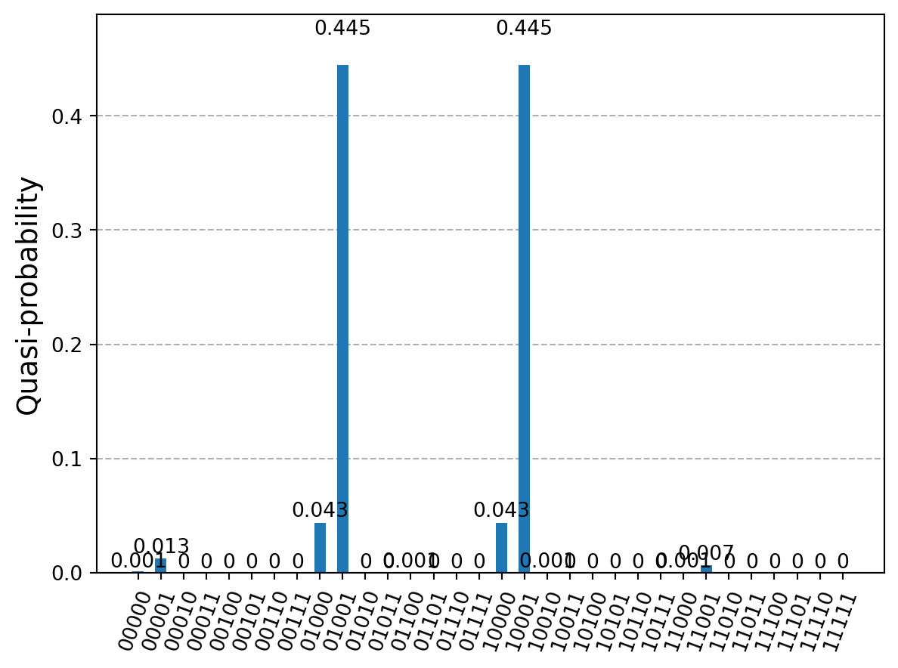

import networkx as nx
# Create empty graph
G = nx.Graph()
# Add edges to the graph (also adds nodes)
G.add_edges_from([(1,2),(1,3),(2,4),(3,4),(3,5),(4,5)])
nx.draw(G)
Como hemos visto antes, QAOA lo mejor de ambos mundos (idealmente) considerando el ansatz fuera de la AQC pero variacionalmente entrenándolo para obtener la mejor función de programación de los parámetros libres.
Continuando con el ejemplo anterior….
import networkx as nx
# Create empty graph
G = nx.Graph()
# Add edges to the graph (also adds nodes)
G.add_edges_from([(1,2),(1,3),(2,4),(3,4),(3,5),(4,5)])
nx.draw(G)
import numpy as np
from collections import defaultdict
# Initialize our Q matrix
Q = defaultdict(int)
# Update Q matrix for every edge in the graph
for i, j in G.edges:
Q[(i,i)]+= -1
Q[(j,j)]+= -1
Q[(i,j)]+= 2
# Give it also a matrix shape to ease readability
size = G.number_of_nodes()
H_problem = np.zeros((size, size))
for k, v in Q.items():
if not isinstance(k, int):
H_problem[k[0]-1][k[1]-1] = v
H_problemarray([[-2., 2., 2., 0., 0.],
[ 0., -2., 0., 2., 0.],
[ 0., 0., -3., 2., 2.],
[ 0., 0., 0., -3., 2.],
[ 0., 0., 0., 0., -2.]])Para este ejemplo simple, force‑force the solution can be done to have a reference for it.
import numpy as np
def objective_value(x: np.ndarray, w: np.ndarray) -> float:
"""Compute the value of a cut.
Args:
x: Binary string as numpy array.
w: Adjacency matrix.
Returns:
Value of the cut.
"""
return np.dot(np.dot(x.T, w), x)
def bitfield(n: int, L: int) -> list[int]:
""" Get the binary representation"""
result = np.binary_repr(n, L)
return [int(digit) for digit in result] # [2:] to chop off the "0b" part
# use the brute-force way to generate the oracle
L = G.number_of_nodes()
max = 2**L
sol = np.inf
for i in range(max):
cur = bitfield(i, L)
cur_v = objective_value(np.array(cur), H_problem)
if cur_v < sol:
sol = cur_v
print(f'Objective value computed by the brute-force method is {sol}')Objective value computed by the brute-force method is -5.0El principal desafío sería entender si este es la única solución en nuestro ejemplo
x = [0, 1, 1, 0, 0]
print(np.dot(np.dot(np.transpose(x), H_problem), x))-5.0x = [0, 1, 1, 0, 1]
print(np.dot(np.dot(np.transpose(x), H_problem), x))-5.0De hecho, para este ejemplo sabemos que hay más de una solución óptima…
from qiskit.visualization import plot_histogram
solution = {
'01101': 0.25,
'10010': 0.25,
'10011': 0.25,
'01100': 0.25,
}
plot_histogram(solution)
Nos gustaría comprender completamente nuestro landscape de soluciones. La Computación Cuántica puede ayudarnos mapeando la solución a un estado más complejo superpuesto que revela todas las soluciones potenciales de nuestro problema.
Necesitaremos construir un Hamiltoniano que mapee nuestro problema.
from qiskit.quantum_info import SparsePauliOp
H_op = SparsePauliOp.from_list(
[
# h
("ZIIII", -2),
("IZIII", -2),
("IIZII", -3),
("IIIZI", -3),
("IIIIZ", -2),
# j
("ZZIII", 2),
("ZIZII", 2),
("IZIZI", 2),
("IIZIZ", 2),
("IIIZZ", 2),
]
)
print(f"Number of qubits: {H_op.num_qubits}")Number of qubits: 5En este caso, utilizaremos la funcionalidad existente de Qiskit y haremos un drill-down para resaltar lo que se hace detrás de cámaras. Qiskit proporciona una implementación lista para usarse de QAOA que solo requerirá un optimizador y una forma de extraer información de nuestro dispositivo cuántico (ya sea Estimator o Sampler primitive).
from qiskit_algorithms.minimum_eigensolvers import QAOA
from qiskit_algorithms.optimizers import COBYLA
from qiskit.primitives import Sampler
optimizer = COBYLA()
sampler = Sampler()
qaoa = QAOA(sampler, optimizer, reps=2)
result = qaoa.compute_minimum_eigenvalue(H_op)/tmp/ipykernel_6339/2458342227.py:6: DeprecationWarning: The class ``qiskit.primitives.sampler.Sampler`` is deprecated as of qiskit 1.2. It will be removed no earlier than 3 months after the release date. All implementations of the `BaseSamplerV1` interface have been deprecated in favor of their V2 counterparts. The V2 alternative for the `Sampler` class is `StatevectorSampler`.
sampler = Sampler()print(result){ 'aux_operators_evaluated': None,
'best_measurement': { 'bitstring': '01001',
'probability': np.float64(0.086449999567766),
'state': 9,
'value': np.complex128(-10+0j)},
'cost_function_evals': np.int64(236),
'eigenstate': {0: np.float64(0.022429056715876), 1: np.float64(0.036720852153469), 2: np.float64(0.01906254901491), 3: np.float64(0.022086802684874), 4: np.float64(0.01906254901491), 5: np.float64(0.022086802684874), 6: np.float64(0.066566554435232), 7: np.float64(0.010010142469647), 8: np.float64(0.023608944563042), 9: np.float64(0.053527906399923), 10: np.float64(0.01341879572247), 11: np.float64(0.00340154478602), 12: np.float64(0.079397932747825), 13: np.float64(0.065985996450701), 14: np.float64(0.093717496759352), 15: np.float64(0.00397178930926), 16: np.float64(0.023608944563042), 17: np.float64(0.053527906399923), 18: np.float64(0.079397932747825), 19: np.float64(0.065985996450701), 20: np.float64(0.01341879572247), 21: np.float64(0.00340154478602), 22: np.float64(0.093717496759352), 23: np.float64(0.00397178930926), 24: np.float64(0.02363554799296), 25: np.float64(0.052722706758054), 26: np.float64(0.00143048996505), 27: np.float64(0.000947958997872), 28: np.float64(0.00143048996505), 29: np.float64(0.000947958997872), 30: np.float64(0.021712974238599), 31: np.float64(0.005085750433567)},
'eigenvalue': np.float64(-4.18534411207862),
'optimal_circuit': <qiskit.circuit.quantumcircuit.QuantumCircuit object at 0x71bc7526b0e0>,
'optimal_parameters': { ParameterVectorElement(β[0]): np.float64(1.0076858267045614),
ParameterVectorElement(β[1]): np.float64(-2.6352157758476844),
ParameterVectorElement(γ[0]): np.float64(-6.132020953223544),
ParameterVectorElement(γ[1]): np.float64(6.696593547210825)},
'optimal_point': array([ 1.00768583, -2.63521578, -6.13202095, 6.69659355]),
'optimal_value': np.float64(-4.18534411207862),
'optimizer_evals': None,
'optimizer_result': <qiskit_algorithms.optimizers.optimizer.OptimizerResult object at 0x71bc753ab9e0>,
'optimizer_time': 0.9606175422668457}from qiskit.visualization import plot_histogram
counts = {}
for key in result.eigenstate:
key_str = format(key, 'b').zfill(5)
counts[key_str] = result.eigenstate[key]
plot_histogram(counts)
from qiskit.quantum_info import Statevector
from qiskit.result import QuasiDistribution
def sample_most_likely(state_vector: QuasiDistribution | Statevector) -> np.ndarray:
"""Compute the most likely binary string from state vector.
Args:
state_vector: State vector or quasi-distribution.
Returns:
Binary string as an array of ints.
"""
if isinstance(state_vector, QuasiDistribution):
values = list(state_vector.values())
else:
values = state_vector
n = int(np.log2(len(values)))
k = np.argmax(np.abs(values))
x = bitfield(k, n)
x.reverse()
return np.asarray(x)
x = sample_most_likely(result.eigenstate)
print(x)
print(f'Objective value computed by QAOA is {objective_value(x, H_problem)}')[0 1 1 1 0]
Objective value computed by QAOA is -4.0from qiskit_algorithms.optimizers import SLSQP
optimizer = SLSQP()
qaoa = QAOA(sampler, optimizer, reps=4)
result = qaoa.compute_minimum_eigenvalue(H_op)
print(result){ 'aux_operators_evaluated': None,
'best_measurement': { 'bitstring': '01001',
'probability': np.float64(0.319795478016296),
'state': 9,
'value': np.complex128(-10+0j)},
'cost_function_evals': 342,
'eigenstate': {0: np.float64(0.000844191415655), 1: np.float64(0.005083480808494), 2: np.float64(0.005669553089818), 3: np.float64(0.001706910079892), 4: np.float64(0.005669553089818), 5: np.float64(0.001706910079892), 6: np.float64(0.018506706780843), 7: np.float64(0.000453559139987), 8: np.float64(0.077532034014524), 9: np.float64(0.31979547084196), 10: np.float64(0.008841620873535), 11: np.float64(0.000937890464832), 12: np.float64(0.025836615255431), 13: np.float64(0.008037689537527), 14: np.float64(0.003494175503294), 15: np.float64(1.4002391851e-05), 16: np.float64(0.077532034014524), 17: np.float64(0.31979547084196), 18: np.float64(0.025836615255431), 19: np.float64(0.008037689537527), 20: np.float64(0.008841620873535), 21: np.float64(0.000937890464832), 22: np.float64(0.003494175503294), 23: np.float64(1.4002391851e-05), 24: np.float64(0.001916083556263), 25: np.float64(0.052767611377925), 26: np.float64(0.003258181428037), 27: np.float64(0.002005991301884), 28: np.float64(0.003258181428037), 29: np.float64(0.002005991301884), 30: np.float64(0.005965820223644), 31: np.float64(0.000202277132014)},
'eigenvalue': np.float64(-8.194207518088938),
'optimal_circuit': <qiskit.circuit.quantumcircuit.QuantumCircuit object at 0x71bc6cb59790>,
'optimal_parameters': { ParameterVectorElement(β[1]): np.float64(4.619230271824464),
ParameterVectorElement(β[0]): np.float64(2.304252460620848),
ParameterVectorElement(β[2]): np.float64(1.3881857541879543),
ParameterVectorElement(β[3]): np.float64(5.082856693752043),
ParameterVectorElement(γ[0]): np.float64(4.823918256744818),
ParameterVectorElement(γ[1]): np.float64(-4.516970161145386),
ParameterVectorElement(γ[2]): np.float64(0.5748300170855923),
ParameterVectorElement(γ[3]): np.float64(0.5490520364698988)},
'optimal_point': array([ 2.30425246, 4.61923027, 1.38818575, 5.08285669, 4.82391826,
-4.51697016, 0.57483002, 0.54905204]),
'optimal_value': np.float64(-8.194207518088938),
'optimizer_evals': None,
'optimizer_result': <qiskit_algorithms.optimizers.optimizer.OptimizerResult object at 0x71bc740b7b60>,
'optimizer_time': 1.4703588485717773}counts = {}
for key in result.eigenstate:
key_str = format(key, 'b').zfill(5)
counts[key_str] = result.eigenstate[key]
plot_histogram(counts)
x = sample_most_likely(result.eigenstate)
print(x)
print(f'Objective value computed by QAOA is {objective_value(x, H_problem)}')[1 0 0 1 0]
Objective value computed by QAOA is -5.0optimizer = SLSQP(
maxiter=100000
)
qaoa = QAOA(sampler, optimizer, reps=1)
result = qaoa.compute_minimum_eigenvalue(H_op)
print(result){ 'aux_operators_evaluated': None,
'best_measurement': { 'bitstring': '01001',
'probability': np.float64(0.1044053179560956),
'state': 9,
'value': np.complex128(-10+0j)},
'cost_function_evals': 59,
'eigenstate': {0: np.float64(0.01814583086591), 1: np.float64(0.000223652823617), 2: np.float64(0.020683020961293), 3: np.float64(0.024837880387395), 4: np.float64(0.020683020961293), 5: np.float64(0.024837880387395), 6: np.float64(0.213245022379932), 7: np.float64(0.045456500585913), 8: np.float64(0.011203743764465), 9: np.float64(0.017811090111696), 10: np.float64(0.03667132667124), 11: np.float64(0.022968236768065), 12: np.float64(0.044317270988282), 13: np.float64(0.060680007664576), 14: np.float64(0.06491636991979), 15: np.float64(0.013745582460404), 16: np.float64(0.011203743764465), 17: np.float64(0.017811090111696), 18: np.float64(0.044317270988282), 19: np.float64(0.060680007664576), 20: np.float64(0.03667132667124), 21: np.float64(0.022968236768065), 22: np.float64(0.06491636991979), 23: np.float64(0.013745582460404), 24: np.float64(0.006383714028473), 25: np.float64(0.024454138608053), 26: np.float64(0.003936131309553), 27: np.float64(0.000708819365186), 28: np.float64(0.003936131309553), 29: np.float64(0.000708819365186), 30: np.float64(0.039196143197706), 31: np.float64(0.0079360367665)},
'eigenvalue': np.float64(-2.246127796536962),
'optimal_circuit': <qiskit.circuit.quantumcircuit.QuantumCircuit object at 0x71bc6cbbff80>,
'optimal_parameters': { ParameterVectorElement(β[0]): np.float64(-3.6711767290353277),
ParameterVectorElement(γ[0]): np.float64(-4.497126312146536)},
'optimal_point': array([-3.67117673, -4.49712631]),
'optimal_value': np.float64(-2.246127796536962),
'optimizer_evals': None,
'optimizer_result': <qiskit_algorithms.optimizers.optimizer.OptimizerResult object at 0x71bc760fce30>,
'optimizer_time': 0.12561917304992676}counts = {}
for key in result.eigenstate:
key_str = format(key, 'b').zfill(5)
counts[key_str] = result.eigenstate[key]
plot_histogram(counts)
x = sample_most_likely(result.eigenstate)
print(x)
print(f'Objective value computed by QAOA is {objective_value(x, H_problem)}')[0 1 1 0 0]
Objective value computed by QAOA is -5.0Vamos a comprobar qué está sucediendo detrás. Podemos comprobar el ansatz que crea QAOA.
qaoa.ansatz.draw('mpl', fold=150)
qaoa.ansatz.decompose().draw('mpl', fold=150)
qaoa.ansatz.decompose(reps=2).draw('mpl', fold=150)
Como pueden ver, el ansatz se construye siguiendo el esquema de Computación Cuántica Adiabática donde un bloque de rotaciones \(X\) se aplica, y se alterna con el Hamiltoniano de problema (\(Z + ZZ\) interacciones) tantas veces como repeticiones se realicen.
qaoa = QAOA(sampler, optimizer, reps=4)
result = qaoa.compute_minimum_eigenvalue(H_op)
print(result){ 'aux_operators_evaluated': None,
'best_measurement': { 'bitstring': '01001',
'probability': np.float64(0.4445255953960062),
'state': 9,
'value': np.complex128(-10+0j)},
'cost_function_evals': 363,
'eigenstate': {0: np.float64(0.001213363312402), 1: np.float64(0.012827068561593), 2: np.float64(0.000160599714718), 3: np.float64(1.9006934328e-05), 4: np.float64(0.000160599714718), 5: np.float64(1.9006934328e-05), 6: np.float64(1.991516872e-06), 7: np.float64(4.63020892e-07), 8: np.float64(0.043469325288977), 9: np.float64(0.444508261564817), 10: np.float64(0.000164143708115), 11: np.float64(5.514620537e-05), 12: np.float64(0.000549437224037), 13: np.float64(0.000185087578948), 14: np.float64(9.7937168e-08), 15: np.float64(3.8158195e-08), 16: np.float64(0.043469325288977), 17: np.float64(0.444508261564817), 18: np.float64(0.000549437224037), 19: np.float64(0.000185087578948), 20: np.float64(0.000164143708115), 21: np.float64(5.514620537e-05), 22: np.float64(9.7937168e-08), 23: np.float64(3.8158195e-08), 24: np.float64(0.000660657551045), 25: np.float64(0.006536628385527), 26: np.float64(0.000233673394278), 27: np.float64(3.4537148888e-05), 28: np.float64(0.000233673394278), 29: np.float64(3.4537148888e-05), 30: np.float64(5.6041883e-07), 31: np.float64(5.57517161e-07)},
'eigenvalue': np.float64(-9.540411630923048),
'optimal_circuit': <qiskit.circuit.quantumcircuit.QuantumCircuit object at 0x71bc67307b90>,
'optimal_parameters': { ParameterVectorElement(γ[1]): np.float64(5.8918216551242795),
ParameterVectorElement(β[0]): np.float64(2.3488426573548025),
ParameterVectorElement(β[3]): np.float64(5.490959952140954),
ParameterVectorElement(γ[3]): np.float64(2.3558867693849175),
ParameterVectorElement(β[1]): np.float64(7.065678038076961),
ParameterVectorElement(γ[0]): np.float64(-0.7769170137450226),
ParameterVectorElement(β[2]): np.float64(0.4547761221530082),
ParameterVectorElement(γ[2]): np.float64(-2.3590001798168867)},
'optimal_point': array([ 2.34884266, 7.06567804, 0.45477612, 5.49095995, -0.77691701,
5.89182166, -2.35900018, 2.35588677]),
'optimal_value': np.float64(-9.540411630923048),
'optimizer_evals': None,
'optimizer_result': <qiskit_algorithms.optimizers.optimizer.OptimizerResult object at 0x71bc66738350>,
'optimizer_time': 1.5587882995605469}qaoa.ansatz.draw('mpl', fold=150)qaoa.ansatz.decompose().decompose().draw('mpl', fold=150)
Obtained solution distribution really points to the states that provide solutions to our problem, superposed in a state that is the one minimizing the outcome of the circuit with respect to the expectation value of the Hamiltonian.
counts = {}
for key in result.eigenstate:
key_str = format(key, 'b').zfill(5)
counts[key_str] = result.eigenstate[key]
plot_histogram(counts)
Por lo tanto, somos capaces de codificar nuestro problema en un Hamiltoniano Ising, para que podamos fácil diseñar un circuito para obtener los resultados del landscape de soluciones potenciales. Podríamos necesitar configurar las repeticiones necesarias para mapear los parámetros óptimos a nuestra función de programación variacional.
qaoa.ansatz.depth()10Los problemas pequeñosrenderán circuitos superficiales, pero debemos ser conscientes de que introducir muchas repeticiones de esos bloques o layers, requerirá más operaciones para ser apurados, la vida útil de los qubits will need to be longer y las más operaciones añadimos, más ruido entrará en nuestro estado final.